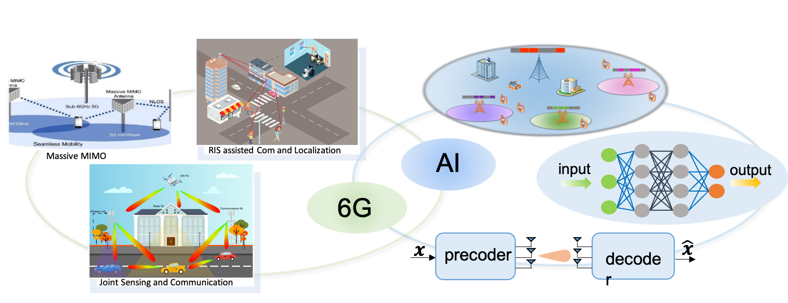

|
RESEARCH Areas
My ongoing research interests lie at the intersection of high-dimensional signal recovery, mathematical optimization, signal-processing and aspects of learning.
Research Areas include
Wireless communications for 6G systems
Machine learning and statistical signal processing for wireless communications (e.g., online deep learning, semantic communication, intelligent network and resource management, edge AI, IoT)
Mathematical principles: high-dim data processing and analysis, statistics, distributed optimization and machine learning.
Wireless Communications for Next Generation Network
|
 |
The sixth generation (6G) network have recently attracted significant attention from both the industry and academia,
whose vision is towards ubiquitous 3D coverage, the intelligent and green networks, Internet of everything, etc. 6G will
be a combination of different networks: satellites, ocean, airplane, mobile cellular and other undefined networks to
achieve seamless coverage of integrated information. Compared to the previous generations, 6G can provide services with
more stringent requirement, such as high throughput, low latency, ultra reliability, denser connection, high
energy efficiency, connected intelligence with machine learning capability. The requirements of 6G system have made the
fine-grained optimization of radio resources and effective learning of network-related information an urgent
necessity. Due to the large scale, high density, heterogeneous quality of service and integrated cross-layer and multi-
function design, the optimization problem in 6G network can be extremely time-sensitive and complex, which poses great
challenge for efficient optimization algorithm design. Machine learning has been recently leveraged as a disruptive
technology to solve the challenging optimization problems in 6G wireless networks.
|
High-dim Data Processing
Distributed Optimization
Talks
”Structured Compressive Sensing”, Xiamen University, Xiamen, China, 2021.
”Compressive Channel Estimation in mmWave Systems with Flexible Hybrid Beamforming Architecture”, 2020 IEEE International Conference on Communications (ICC), Dublin, Ireland, 2020.
”Compressive RF training and channel estimation in massive MIMO with limited RF chains”, 2017 IEEE International Conference on Communications (ICC), Paris, 2017.
”Optimal-Tuned Weighted LASSO for Massive MIMO Channel Estimation with Limited RF Chains”, 2017 IEEE Global Communications Conference, Singapore, 2017.
|